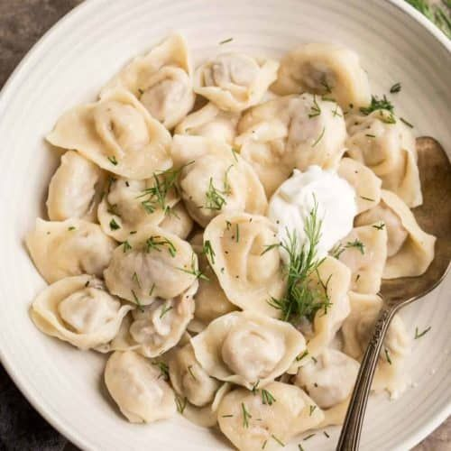

Pelmeni

Pelmeni are traditional Russian dumplings.
Pelmeni are dumplings of Russian cuisine that consist
of filling wrapped in thin, unleavened dough.
Ingredients:
Dough:
- Eggs - 2
- Buttermilk - 2/3 cups
- Sour cream - 1tbsp
- Warm water - 2 cups
- Salt - 1/2tsp
- Flour - 7 cups
Filling:
- Ground turkey - 1lb
- Ground pork - 1lb
- Medium onion - 1
- Olive oil - 1tbsp
- Garlic cloves pressed - 3
- Ground pepper - 1/2tsp
- Salt - 3/4tsp
Steps:
- Using the whisk attachment on medium speed, mix together: 2/3 cup buttermilk, 1tbsp of sour cream, 2 cups warm water, 2 eggs and 1 1/2tsp salt until well blended.
- Switch to dough hook and add 4 cups flour. Mix on speed 2 until well blended.
- Add 3 more cups of flour (one at a time). Add the rest of the flour 1tbsp at a time, until the dough is no longer sticking to the sides of the bowl. Once it is no longer sticking to the bowl, continue to mix 5 minutes.
- Place the dough on a lightly floured surface.
- Heat 1tbsp oil in a medium skillet. Add onion and saute until golden and soft. Add garlic and saute another minute.
- Mix together pork, turkey, onion & garlic mix, 3/4tsp salt, 1/2tsp pepper and 1tsp hot sauce (optional).
- Shape a portion of the dough into a 1 to 2 -inch thick log. Cut off 1 piece at a time and roll into disks to form a 1.5-inch circle with rolling pin.
- Place 1tsp pelmeni filling in the center.
- Lose the edges and pinch together.
- Pinch the corners together to form a diaper shape.
- Place pelmeni onto a well-floured cutting board. Arrange pelmeni evenly on the cutting board, sprinkle with flour and place in the freezer.
- Once they are fully frozen, put them in large ziploc bags, sprinkle with flour and freeze them for future enjoyment.
- Bring a pot of water to boil (add salt). Add frozen pelmeni and return to a boil. They should float to the top, then boil for 3 minutes longer. Drain pelmeni and place them in a clean bowl.